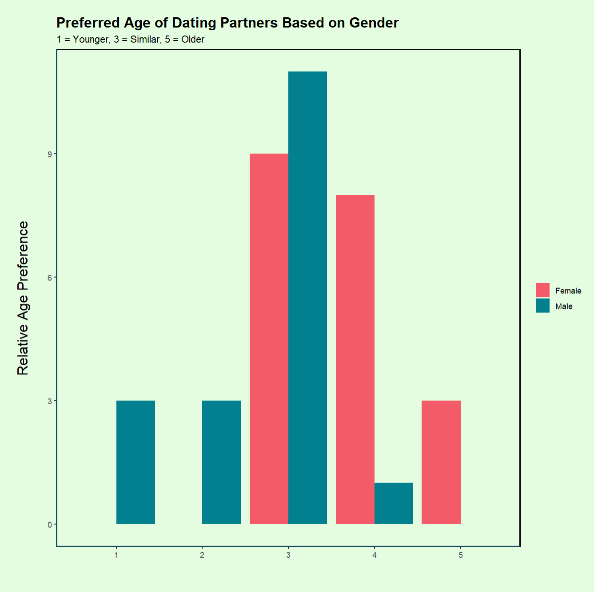

THE DATA THAT WE GATHERED
<
>

How old is too old?
There is sufficient statistical evidence to conclude that women and men have differences in age preference of dating partners. Women never indicated preference for someone who was younger, and only one man surveyed indicated preference for a woman who was older than him.